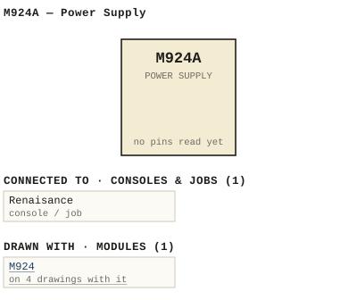

M924A — Power Supply
| Type | module |
| Category | UNSORTED |
| Try it | simulator & front panel · download package (zip) |
| Earliest dated evidence | 1994|27 — manual issue date |
| Evidence | "Issue #1 December 15, 1994" in WBSps Engineering from H drive-20261018T013433Z-1-001/WBSps Engineering from H drive/WBSps - Word Perfect Manuals/M924A.WP |
| Confidence | high |
| All years found | 1994|27, 1995|28 |
| Used in jobs | Renaisance |
| Variants | M924 |
| Folder | DOCUMENTS/RECENT SCANS/WBSps.ca 20210319 - Redone of what Sampson scanned |
| Folder | Modules/UNSORTED/M924 |
| Folder | Modules/UNSORTED/M924A |
Connections
What it is made of and what it is part of.
Pictures


M924A.connections.svg 19xx - DOC - 924-03-003 - NQIES REVOVE ALL BURRS AND SHARP EDGES TOL.jpg
19xx - DOC - 924-03-003 - NQIES REVOVE ALL BURRS AND SHARP EDGES TOL.jpg 19xx - 924-03-001 - M924A M924D POWER SUPPLY FRONT PANEL - DRN DRG - ISS 1.jpg
19xx - 924-03-001 - M924A M924D POWER SUPPLY FRONT PANEL - DRN DRG - ISS 1.jpg 19xx - 924-03-003 - M924A POWER SUPPLY COVER - ISS 1.jpg
19xx - 924-03-003 - M924A POWER SUPPLY COVER - ISS 1.jpgPinout & connections
Dates found in the documents
| Year | Kind | Text | File |
|---|---|---|---|
| 1994|27 | manual issue date | Issue #1 December 15, 1994 |
1994 - M924A - 924-02-003 - 3 CONNECTOR 3-1 - LAYOUT.wp |
Documents (1)
| Year | File | |
|---|---|---|
| 1994|27 | 1994 - M924A - 924-02-003 - 3 CONNECTOR 3-1 - LAYOUT.wp | note |
Photos & scans (3)


Parts list — board M924A (13 parts)
From M924A.WP; also in timelines/data/bom.csv.
| Ref | Part | Value | Manufacturer | Mfr part no. |
|---|---|---|---|---|
| C1-C2 | Capacitor | 0.047/275VAC | Wima | MP3 0.047 275V |
| CR1-CR4 | Diode | Motorola | 1N1202A | |
| CR5,CR6 | Diode | " | 1N4751A | |
| DS1-DS2 | Red LED | Alco | SLD-853-R | |
| F1-F4 | Fuseholder | Buss | HKP | |
| LF1-LF2 | Power Line Filter | Curtis | F1100AA06 | |
| P1-P2 | 15 Pin Connector | Molex | 19-09-2158 | |
| PS1-PS2 | Power Supply | Condor | GPC225-24 | |
| R1-R2 | Resistor 3.75W | 1K | Dale | CW-3.75-5 1K |
| SW1 | Circuit Breaker | Airpax | PP21-2-10.00A-XX-20 | |
| TP1 | Red Test Jack | Johnson | 105-0602-001 | |
| TP2 | Black Test Jack | " | 105-0603-001 | |
| TP3 | Violet Test Jack | " | 105-0612-001 |
Consoles & jobs it is connected to (1)
Their own drawings name this module.
| Job | Year | Drawing | Page |
|---|---|---|---|
| Renaisance | 1994 - Renaisance - MKI.pdf | 5 |
Named in other drawings & documents (5)
Drawings (1)
Each scan with its trace laid over it: the slider runs from the scan to the vector drawing. Click one to see it large and save it as SVG, DXF, KiCad, PDF or PowerPoint.
Nqies Revove All Burrs And Sharp Edges Tolviewer
Read from the drawing title blocks.
| Drawing | Title | Date | Drawn by | Checked by | Iss. | Source |
|---|---|---|---|---|---|---|
| 924-03-003 | Nqies Revove All Burrs And Sharp Edges Tol | DRG | file |